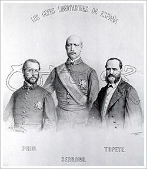
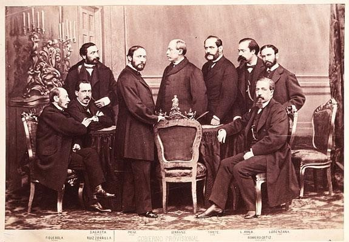
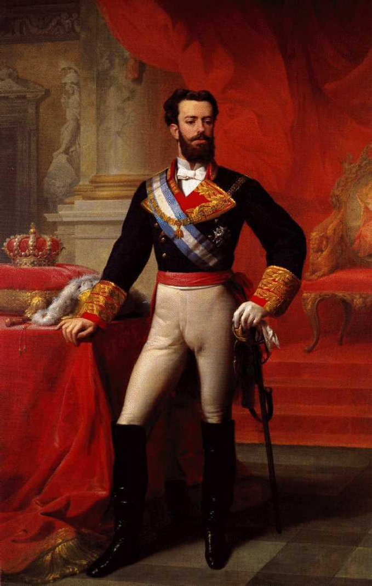
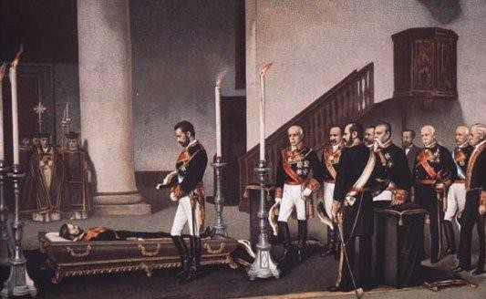
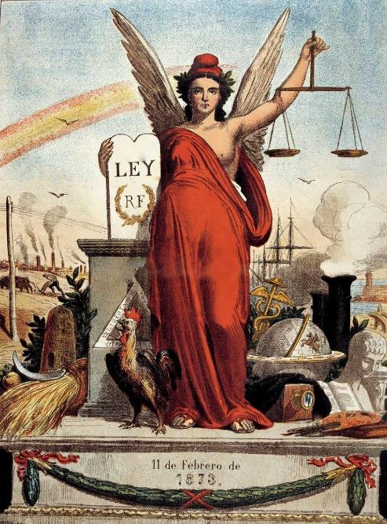
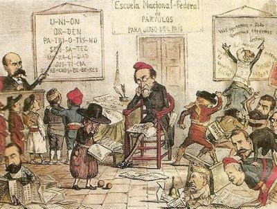
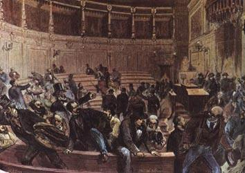
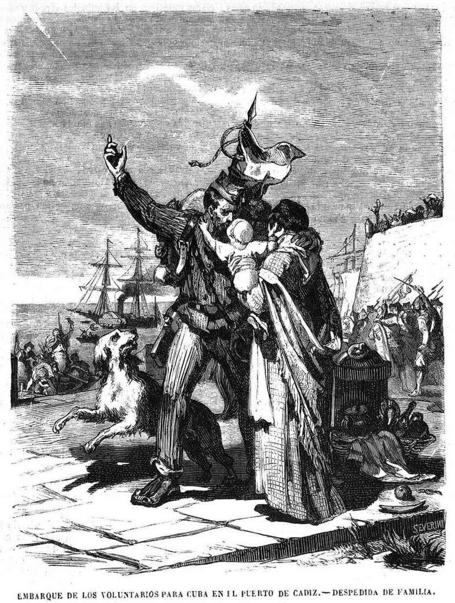

Tema 3: El Sexenio Revolucionario o Democrático (1868 - 1874)
El primer ensayo de democracia contemporánea en España: de la caída de la dinastía borbónica al colapso del proyecto republicano federal.

1. La Revolución de 1868: La Gloriosa
El 19 de septiembre de 1868 se produjo un alzamiento militar en la bahía de Cádiz que derribó de forma definitiva el régimen autoritario isabelino. El pronunciamiento fue encabezado por el almirante de la armada Juan Bautista Topete, secundado por los generales de prestigio Juan Prim y Francisco Serrano, quienes lanzaron un manifiesto bajo el célebre lema de Viva España con honra, exigiendo acabar con la venalidad administrativa y la injerencia política cortesana.

Imagen 1: Ilustración conmemorativa de época con los retratos de los generales y jefes militares que encabezaron el pronunciamiento de la revolución democrática.
La rapidísima propagación de la rebelión armada por toda la geografía española se vio impulsada por una conjunción de profundos descontentos estructurales:
- La Aguda Depresión Económica de 1866: Coincidió con la primera gran crisis del sistema de libre mercado internacional de signo capitalista. En España afectó a la Hacienda Pública y al sector financiero debido a la baja rentabilidad de las inversiones del ferrocarril por la debilidad de tráfico, provocando la **quiebra de compañías ferroviarias y el hundimiento de la Bolsa de Madrid**. Asimismo, la Guerra de Secesión norteamericana encareció el precio del algodón en bruto, desatando el **cierre de fábricas textiles en Cataluña** y el consecuente desempleo masivo de obreros. A esto se unió una **grave crisis de subsistencia** por malas cosechas de trigo consecutivas que disparó el precio del pan un 67%, provocando motines de hambre populares en las ciudades.
- El Agotamiento Político Moderado: El general Ramón María de Narváez gobernó con un autoritarismo extremo, persiguiendo militarmente a los opositores e ignorando sistemáticamente el juego del Parlamento nacional. Ante la imposibilidad de acceder al poder por vías legales, los partidos de la oposición (progresistas, demócratas y republicanos, dirigidos por Juan Prim) firmaron en Bélgica el histórico Pacto de Ostende en agosto de 1866, comprometiéndose a deponer del trono a la reina Isabel II de España y elegir el futuro régimen del país mediante Cortes electas por sufragio universal.
- La Impopularidad Personal de la Reina: La desafección de las masas hacia la corona de Isabel II se alimentaba de la escandalosa influencia cortesana del padre Antonio María Claret, confesor real, o de sor Patrocinio (la monja de las llagas).

Imagen 2: Cartografía peninsular que delimita los focos de insurrección popular, la formación de Juntas revolucionarias y el trayecto de los ejércitos sublevados en 1868.
La resistencia armada de las fuerzas gubernamentales se desmoronó tras la aplastante derrota de los ejércitos isabelinos en la batalla del Puente de Alcolea (Córdoba) el 28 de septiembre de 1868 frente a las tropas dirigidas por el general Serrano. Al quedarse sin apoyos en la oficialidad militar, Isabel II de España, que veraneaba en la localidad vizcaína de Lequeitio, se vio obligada a huir de forma inmediata al exilio en Francia, poniendo fin a la monarquía moderada.
⚠️ El Freno Revolucionario y el Poder de Base Popular
Durante los primeros días del triunfo insurreccional, los ciudadanos organizados en Juntas revolucionarias locales reclamaron la implantación de reformas radicales (la disolución del catolicismo de Estado, la **abolición definitiva del impuesto sobre consumos** y la **supresión del sistema forzoso de reclutamiento militar o quintas**). Sin embargo, el primer paso del nuevo Gobierno provisional fue controlar la deriva armada mediante la disolución de estas Juntas y el desarme progresivo de la Milicia Nacional, dejando claro que el objetivo prioritario era un cambio dinástico de signo burgués y no una revolución popular de carácter social.
2. El Gobierno Provisional y la Constitución de 1869
Tras la huida de la reina, se constituyó un nuevo Gobierno provisional presidido por el general Francisco Serrano (unionista), con el general Juan Prim (progresista) al frente del Ministerio de la Guerra y destacadas figuras liberales como Práxedes Mateo Sagasta en Gobernación. Este gabinete convocó de inmediato elecciones a Cortes constituyentes.

Imagen 3: Retrato fotográfico histórico de estudio con los miembros integrantes del primer gabinete del Gobierno provisional en Madrid.
Las elecciones de enero de 1869 marcaron un hito histórico al celebrarse por primera vez mediante el sistema de **sufragio universal masculino directo** para varones mayores de 25 años, ampliando el cuerpo electoral a casi cuatro millones de votantes. El escrutinio deparó una holgada mayoría a la coalición de partidos gubernamentales (progresistas y unionistas), partidaria de mantener la monarquía parlamentaria como forma de Estado, frente a un bloque opositor de sesenta y nueve diputados republicanos federales y un sector residual de carlistas.
Las nuevas Cortes redactaron y aprobaron la Constitución de 1869, proclamada solemnemente el 1 de junio. Es unánimemente considerada como **la carta magna más avanzada y democrática del constitucionalismo español del siglo XIX**:
📜 Pilares Doctrinales de la Constitución de 1869
- Soberanía Nacional de Base Popular: El poder reside de manera neta y exclusiva en el pueblo de la Nación, del cual emanan de forma democrática todos los poderes del Estado.
- Monarquía Democrática y Parlamentaria: Se consagra que la Corona es un mero símbolo del Estado, limitándose drásticamente las prerrogativas del rey, quien carece de poder ejecutivo real (aplicando la fórmula política de **El rey reina, pero no gobierna**).
- División Estricta de Poderes: El legislativo recae en exclusiva en unas Cortes bicamerales (Congreso y Senado, ambos electivos); el ejecutivo queda depositado en el Consejo de Ministros; y el judicial se reserva a tribunales independientes, instaurando el acceso a la judicatura mediante un transparente **sistema de oposiciones** para erradicar el viejo nepotismo.
- Tabla Monumental de Derechos y Libertades: Por primera vez se reconocieron plenamente libertades individuales básicas de residencia, enseñanza, expresión de ideas, correspondencia de correos y la **libertad absoluta de reunión y asociación**.
- Libertad de Culto Religioso: Se garantizó por ley el ejercicio público y privado de cualquier confesión en territorio español, aunque el Estado asumió el compromiso fiscal de sostener económicamente el culto católico.

Imagen 4: Facsímil ilustrado con el diseño de portada de la primera Constitución democrática e de la nación española.
Las Reformas de Renovación Económica
El ministro de Hacienda del gabinete, Laureano Figuerola, emprendió una profunda reorganización legislativa destinada a asentar una economía plenamente capitalista y librecambista, superando el proteccionismo isabelino:
- La Creación de la Peseta (1869): Se aprobó un decreto que establecía la peseta como unidad monetaria única y oficial para todo el Estado (equivalente a cuatro reales tradicionales), unificando el caótico sistema de cambio mercantil nacional.
- La Ley General de Bases Arancelarias (1869): Redujo sustancialmente los viejos aranceles proteccionistas que encarecían la importación de mercancías extranjeras. La medida desató de inmediato la oposición frontal de la burguesía industrial de Cataluña y de los productores de cereal de Castilla, que temían perder su monopolio agrario nacional.
- La Ley de Minas de 1871: Para sanear la asfixiante deuda pública del Estado de más de 22.000 millones de reales, el Gobierno decretó lo que se denominó popularmente como la **desamortización del subsuelo**, vendiendo o concediendo ricas explotaciones mineras (como el yacimiento de Riotinto o Almadén) a consorcios y compañías privadas (principalmente de capital británico y francés), reactivando la actividad de exportación de metales industriales.

Imagen 5: Acuñación oficial de la primera pieza de plata de una peseta emitida por el Gobierno provisional de la revolución en el año 1869.
3. El Reinado de Amadeo I de Saboya (1871 - 1873)
Aprobada la Constitución que definía a España como una monarquía constitucional, las Cortes nombraron al general Francisco Serrano como regente nacional, mientras el general Juan Prim asumió la presidencia del gabinete con el cometido exclusivo de emprender una compleja búsqueda internacional de un candidato al trono entre las cancillerías de las potencias de Europa.
Tras estudiar y descartar múltiples candidaturas, Prim se decantó firmemente por el príncipe italiano Amadeo de Saboya, duque de Aosta e hijo del rey Víctor Manuel II de Italia. Amadeo I presentaba excelentes credenciales a ojos de los progresistas: procedía de una dinastía con enorme prestigio liberal y ostentaba una concepción profundamente constitucional de la Corona. En noviembre de 1870, las Cortes aprobaron su designación monárquica por una holgada mayoría parlamentaria.

Imagen 6: Retrato oficial al óleo del soberano constitucional Amadeo I de Saboya vistiendo su uniforme de gala de Capitán General de la nación.
Sin embargo, la andadura constitucional del nuevo monarca nació herida de muerte. El 27 de diciembre de 1870, apenas tres días antes del desembarco del rey en el puerto de Cartagena, el general Juan Prim sufrió un trágico atentado con disparos de trabuco en la madrileña calle del Turco de Madrid, falleciendo a causa de la sobrevenida infección de las heridas. Amadeo I desembarcó desolado y desamparado de su principal valedor y estratega militar político en la península, teniendo como primer acto oficial la asistencia a la capilla ardiente de su mentor en la capital.

Imagen 7: Ilustración del misterioso atentado que le costó la vida a Juan Prim en el madrileño carruaje oficial de la calle del Turco en diciembre de 1870.
El Frente General de Rechazo Social y Político
El difícil reinado de Amadeo de Saboya (1871-1873) transcurrió en un clima de parálisis institucional y **extrema fragmentación e inestabilidad política**, viéndose cercado por un amplio abanico de enemigos:
- Los Moderados o Alfonsinos: Fieles partidarios de los Borbones que iniciaron una tenaz campaña para preparar la futura candidatura del príncipe Alfonso, hijo de la derrocada reina. La estrategia fue dirigida con maestría civil por Antonio Cánovas del Castillo, quien atrajo a las filas alfonsinas a la gran burguesía financiera de la nación.
- La Iglesia Católica: Totalmente opuesta al nuevo régimen por la libertad de cultos y, especialmente, por el decreto gubernamental impulsado por Prim que obligaba a los sacerdotes a jurar obediencia y fidelidad a la Constitución de 1869 para mantener sus haberes estatales.
- La Alta Burguesía Industrial y Agraria: Alarmada por la política fiscal de aranceles librecambistas que amenazaba sus mercados de exportación textil e importación de materias primas y, sobre todo, por la discusión parlamentaria de las leyes sociales del Sexenio, tales como la **abolición definitiva de la esclavitud en las plantaciones de Cuba**, el **control del trabajo infantil en la industria** y la creación de jurados mixtos para resolver conflictos mercantiles obreros.
- La III Guerra Carlista (1872-1876): Ante el desengaño por la dinastía extranjera de Saboya, el pretendiente absolutista Carlos VII (heredero de don Carlos) lideró un gran alzamiento armado en la primavera de 1872. El carlismo llegó a dominar amplias zonas de montaña del País Vasco, Navarra y Aragón, llegando a estructurar un **Estado alternativo tradicionalista** con su propio reclutamiento militar regular, su servicio de correos y la acuñación de moneda.
- El Conflicto Colonial de Cuba: La **Guerra de los Diez Años** (iniciada en octubre de 1868 tras el grito de Yara proclamado por el criollo Carlos Manuel de Céspedes) se convirtió en una sangría de hombres y recursos. Los insurgentes cubanos demandaban la independencia nacional, contando de manera velada con el apoyo geopolítico e industrial de los Estados Unidos.

Imagen 8: Lienzo histórico conmemorativo que plasma la escena de la visita del rey Amadeo ante la tumba de su protector en la basílica de Atocha.
Agotado por el desmoronamiento de la propia coalición gubernamental de progresistas y unionistas y la hostilidad del estamento de oficiales del arma de artillería, Amadeo de Saboya redactó su definitiva renuncia irrevocable al trono de España el 10 de febrero de 1873. En un célebre y amargo manifiesto dirigido al Congreso, el rey italiano lamentó que los peores males del país no procedieran de enemigos exteriores, sino de la propia lucha fraticida y ambiciones personales de sus propios partidos nacionales.
4. La Primera República Española (febrero 1873 - enero 1874)
El 11 de febrero de 1873, el Congreso y el Senado, reunidos de manera extraordinaria en asamblea parlamentaria ante el vacío institucional de la monarquía, asumieron la soberanía del Estado y **proclamaron de forma mayoritaria la Primera República**. La decisión fue de carácter pragmático, concebida por una amplia mayoría monárquica del Congreso para ganar tiempo para la causa de los Borbones y frenar temporalmente la revolución social.

Imagen 9: Litografía satírica alegórica de la Niña Bonita de la revista satírica de La Flaca, representando el nacimiento de la primera experiencia republicana.
La nueva República nació en un clima de asfixia y aislamiento internacional absoluta (siendo únicamente reconocida por las administraciones de los Estados Unidos y la Confederación Suiza), y deparó una **inmensa inestabilidad interna**, reflejada en la sucesión de **cuatro presidentes en apenas once meses de mandato**:
👤 1. Estanislao Figueras (Febrero - Junio de 1873): La debilidad original
Fue el primer jefe del poder ejecutivo republicano. Figueras intentó gobernar con el concurso de una débil coalición de progresistas avanzados y demócratas, viéndose forzado a aplicar de forma apresurada la abolición del odiado impuesto indirecto de consumos y decretando el cese temporal del reclutamiento por quintas militares. Sin embargo, al quedarse sin fondos fiscales para el pago de los haberes a los funcionarios, deparando motines campesinos recurrentes, Figueras dimitió y abandonó la presidencia.
👤 2. Francisco Pi i Margall (Junio - Julio de 1873): El proyecto federal y la insurrección cantonal
Las Cortes constituyentes proclamaron la **República Federal** el 7 de junio de 1873 bajo la presidencia del brillante intelectual y escritor catalán Francisco Pi i Margall. Este diseñó el **Proyecto de Constitución Federal de 1873**, que no llegó a entrar formalmente en vigor. El texto establecía un Estado descentralizado integrado por **diecisiete Estados autónomos** (incluyendo el territorio colonial de Cuba), con plena soberanía legislativa, administrativa y financiera, y consagraba la separación estricta de la Iglesia y el Estado.
Sin embargo, la impaciencia de los sectores republicanos federales intransigentes (que consideraban lentas las reformas de las Cortes en Madrid) y la influencia del anarquismo desataron en julio de 1873 el estallido de la **Insurrección Cantonal**. De forma espontánea se proclamaron cantones independientes dotados de gobiernos autónomos, milicias ciudadanas y moneda propia en localidades como Cartagena, Valencia, Alicante, Málaga, Sevilla y Cádiz. El cantón de **Cartagena** se convirtió en el foco de resistencia de mayor envergadura gracias al control de las instalaciones de su arsenal naval y de la flota fondeada en su puerto. Ante el desbordamiento de la insurrección cantonal y su rechazo personal a reprimir por la fuerza armada de los fusiles la rebelión popular, Pi i Margall renunció en julio de 1873.
👤 3. Nicolás Salmerón (Julio - Septiembre de 1873): El restablecimiento del orden
Sustituyó en la presidencia a Pi i Margall con un compromiso firme de restaurar el orden civil alterado. Salmerón confirió plenos poderes a los generales del ejército regular (como los generales Manuel Pavía o Arsenio Martínez Campos) para doblegar militarmente los cantones. El ejército de la República sofocó rápidamente la resistencia de los cantones, exceptuando la plaza fuerte de Cartagena. No obstante, el regreso victorioso del estamento militar convirtió a los jefes de armas en los únicos árbitros sociales de la estabilidad. En septiembre, Salmerón presentó su renuncia irrevocable al sentirse **moralmente incapaz de firmar las condenas a muerte** por fusilamiento dictadas por la jurisdicción militar de los tribunales de guerra contra los cabecillas de la insurrección cantonal.
👤 4. Emilio Castelar (Septiembre - Diciembre de 1873): El giro autoritario unitario
Máximo exponente del republicanismo unitario y conservador, Castelar asumió el poder ejecutivo bajo el firme lema rector de **orden, autoridad y gobierno**. Gobernó con las Cortes clausuradas de forma dictatorial, decretando el **Estado de Sitio**, suspendiendo temporalmente las garantías constitucionales individuales, militarizando la Guardia Civil y reorganizando con dureza los cuerpos armados de artillería del ejército para reprimir los focos activos de desorden social y agrario en las provincias.

Imagen 10: Ilustración satírica de Pi i Margall acorralado e incapaz de conciliar el desatado federalismo regional de la nación.

Imagen 11: Grabado decimonónico del general Manuel Pavía disolviendo las Cortes constituyentes en el palacio del Congreso en enero de 1874.
La República Conservadora de Serrano y el Colapso Final
El 2 de enero de 1874 se reabrieron las sesiones de las Cortes. Al reanudarse los debates, la coalición parlamentaria republicana de izquierda infligió una dura derrota por votos de censura contra el primer ministro conservador Emilio Castelar, abriendo de forma inmediata el paso a un gobierno republicano federal de signo radical.
Para impedir este desenlace, durante la madrugada del 3 de enero de 1874, el capitán general de Castilla la Nueva, Manuel Pavía, encabezó un fulminante **golpe de Estado militar**. Las fuerzas del ejército regular y de la Guardia Civil irrumpieron a tiros de fusilería en el palacio del Congreso, forzando la disolución de las Cortes de la República de manera violenta.
Tras el golpe de Pavía, se constituyó un régimen autoritario de carácter provisional presidido por el veterano general Francisco Serrano. Esta **dictadura de Serrano** suspendió el vigor de la Constitución de 1869, clausuró el Parlamento nacional de forma indefinida, ilegalizó por real decreto las asociaciones e internacionalistas obreras y persiguió toda disidencia con mano militar.
La inestabilidad militar y la parálisis hacendística pavimentaron la causa de los partidarios del príncipe Borbón, alentada por el político Antonio Cánovas del Castillo. El 1 de diciembre de 1874, el heredero firmó el histórico **Manifiesto de Sandhurst**, prometiendo la instauración de una monarquía constitucional y católica. Finalmente, el 29 de diciembre de 1874, el general Arsenio Martínez Campos protagonizó un **pronunciamiento militar en Sagunto** proclamando rey de España a Alfonso XII, dando inicio al periodo de la Restauración.
5. Los Inicios del Movimiento Obrero Español
La definitiva disolución de los privilegios estamentales del Antiguo Régimen y la expansión del libre mercado liberal consolidaron en España una nueva estructura social de clases: la **sociedad de clases contemporánea**. En ella, la posición de los individuos dejaba de venir fijada por nacimiento y pasaba a depender de la propiedad del capital o del mérito profesional individual.
Sin embargo, bajo esta igualdad legal teórica, las condiciones de vida y de trabajo de la **inmensa base popular agraria e industrial eran de extrema miseria**:
- El Proletariado Industrial: Concentrado mayoritariamente en los núcleos fabriles textiles de Cataluña y la siderurgia del País Vasco. Los obreros contemporáneos (muchos de ellos descendientes de campesinos desposeídos por las desamortizaciones) sufrían **jornadas laborales asfixiantes de 12 a 14 horas diarias**, salarios ínfimos de subsistencia y un **despido libre absoluto** sin protección social alguna frente a accidentes o enfermedad. Este contraste insultante con la opulenta burguesía industrial desató el estallido de la protesta obrera colectiva.
- El Proletariado Rural o Jornalero: Principalmente asentado en los latifundios de la mitad sur peninsular. Los jornaleros (privados del derecho de disfrute tradicional de las tierras comunales municipales tras las desamortizaciones de Mendizábal y Madoz) dependían de salarios estacionales bajísimos y de la voluntad de los grandes terratenientes, sufriendo hambrunas y miseria estructural crónicas.

Imagen 12: Grabado del puerto de Cádiz mostrando la emotiva despedida de los reclutas que partían hacia el frente colonial.
Durante la primera mitad del siglo XIX, la lucha obrera careció de una conciencia colectiva organizada, estando las asociaciones profesionales prohibidas y catalogadas por el código penal como un **delito directo**. Las protestas se reducían a breves brotes de revueltas luditas (consistentes en la destrucción física de las nuevas máquinas de hilar y tejer de las fábricas al considerarlas causantes del paro de las familias, como el incendio de la fábrica barcelonesa de Bonaplata en 1835). La primera cooperativa de ayuda mutua se fundó en 1840 con la denominación de la Sociedad de Tejedores de Barcelona, concebida para recaudar pequeños subsidios de auxilio.
El Impacto de la Revolución y el Internacionalismo de la AIT
La Constitución democrática de 1869 y el clima de libertades de la revolución del Sexenio trajeron por primera vez en España la **completa libertad de asociación de los trabajadores**, propiciando el despertar y la rápida expansión organizada de las fuerzas obreras colectivas. De forma paralela, la **Asociación Internacional de Trabajadores (AIT)** se introdujo de manera oficial en la península:
- La Corriente Anarquista: En el invierno de 1868 desembarcó el enviado personal de Bakunin, el activista italiano Giuseppe Fanelli. Este organizó los dos primeros núcleos de la AIT en Madrid y Barcelona, sentando los cimientos de la futura **Federación de Trabajadores de la Región Española**. El anarquismo (defensor de la supresión del Estado y de cualquier autoridad jerárquica) predominó ampliamente entre el proletariado textil de Cataluña y el campesinado jornalero de Andalucía y Valencia.
- La Corriente Socialista o Marxista: De signo marxista y orientada por el yerno de Marx, Paul Lafargue, quien se refugió en España tras el colapso de la Comuna de París en 1871. Su facción defendía la **conquista del poder político por los trabajadores** para fundar un Estado de clase obrero contemporáneo. La corriente socialista predominó en los núcleos metalúrgicos y mineros de Madrid, Vizcaya y Asturias, y culminó con la posterior fundación del **Partido Socialista Obrero Español (PSOE)** en mayo de 1879 por Pablo Iglesias en Madrid, y de la **Unión General de Trabajadores (UGT)** en 1888.
💡 Glosario del Periodo
• Ludismo: Movimiento popular y espontáneo de protesta de los obreros que destruía la maquinaria fabril como forma de lucha por el empleo.
• Quintas: Reclutamiento para el Ejército mediante sorteo que permitía a las familias adineradas librar a sus hijos pagando una elevada redención económica.
Toda esta efervescencia organizada del movimiento obrero se vio cortada de raíz en enero de 1874 tras la disolución militar del Parlamento a manos del general Pavía. El régimen autoritario de Serrano decretó de inmediato la **ilegalización absoluta de todas las secciones de la AIT**, prohibiendo las publicaciones de los sindicatos y forzando a los líderes de la federación a la clandestinidad.